01
Basílica de Nuestra Señora de los Ángeles
Fotografía blanco y negro de la Basílica de Nuestra Señora de los Ángeles, Costa Rica, Cartago.
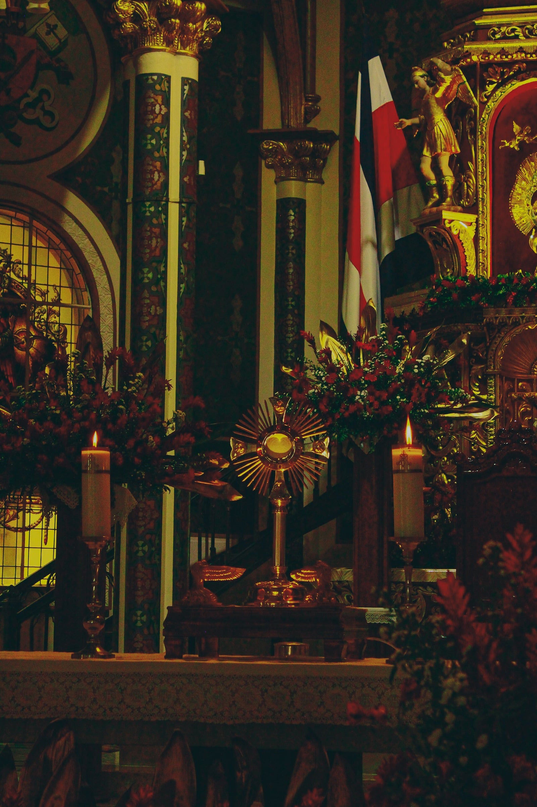
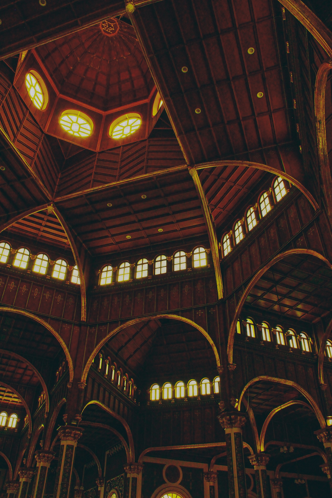
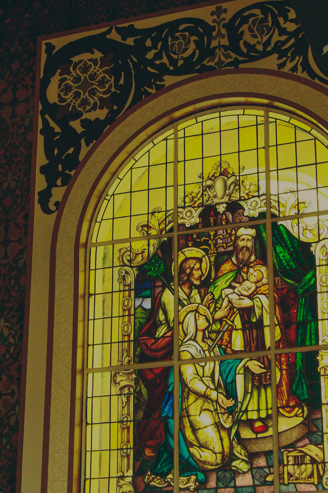
Fotografía libre / Costa Rica
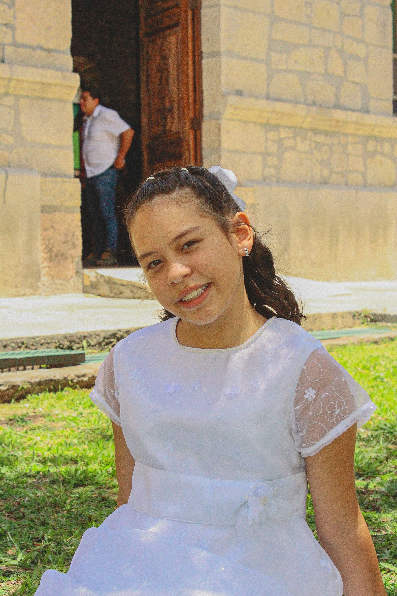
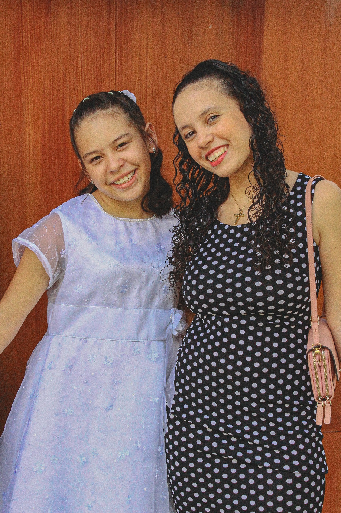
Soy un fotógrafo de 21 años, originario de Santa Ana, Costa Rica.
Mi pasión por la fotografía nació del deseo de capturar momentos que cuentan historias y permanecen en la memoria de las personas. A lo largo de mi experiencia como fotógrafo de nivel intermedio, he desarrollado habilidades en fotografía de retratos, eventos sociales, arquitectura y fotografía sacra.
Mi objetivo es ofrecer imágenes que transmitan emociones reales, cuidando cada detalle de iluminación, composición y edición para entregar resultados de alta calidad.
"Cada fotografía es una huella visual que permanece para siempre."
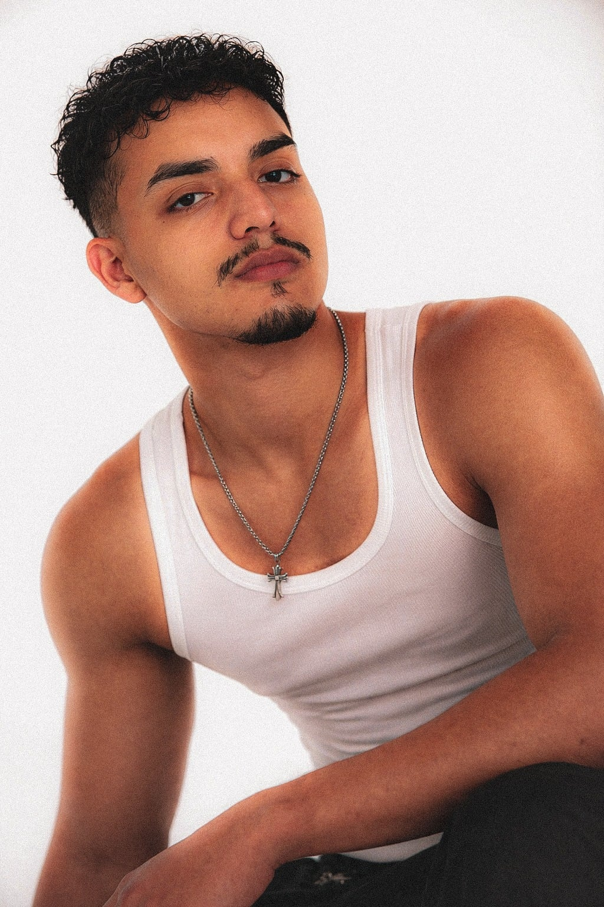
02 / Mirada
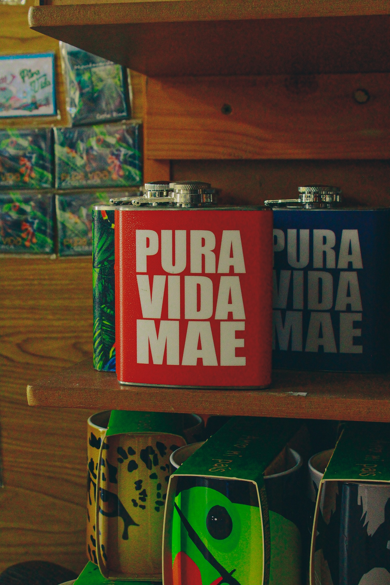
03 / Portafolio
Una selección de imágenes en blanco y negro construidas desde el gesto, la luz y el valor documental del momento.
Fotografía blanco y negro de la Basílica de Nuestra Señora de los Ángeles, Costa Rica, Cartago.



Fotografía de retratos a blanco y negro.
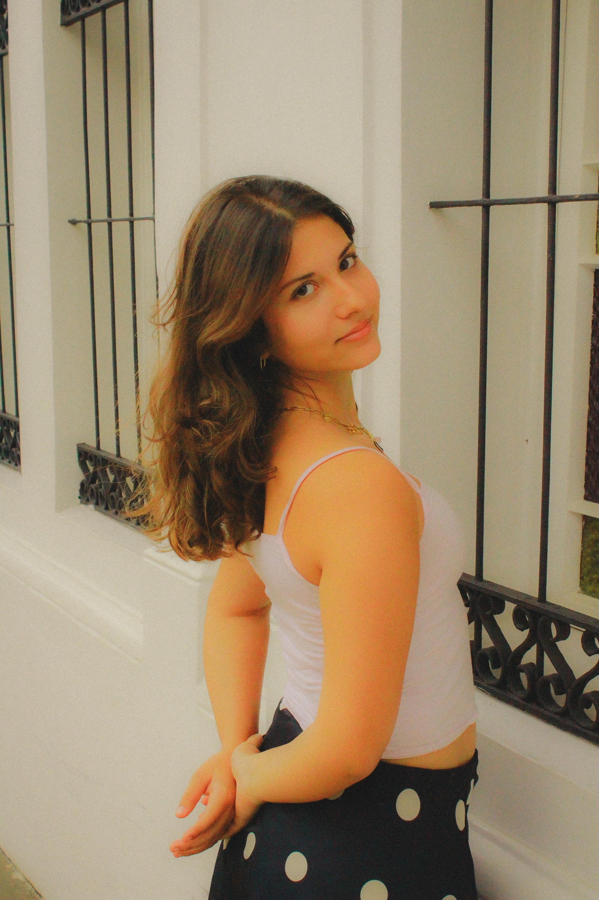
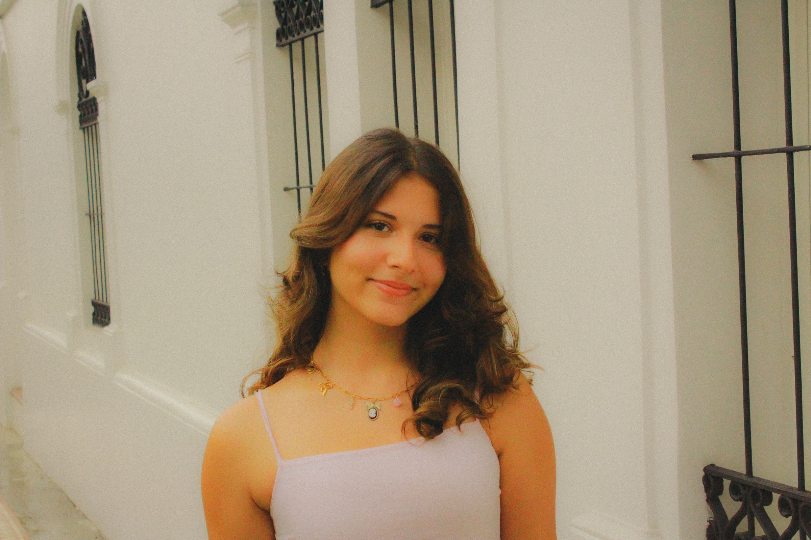
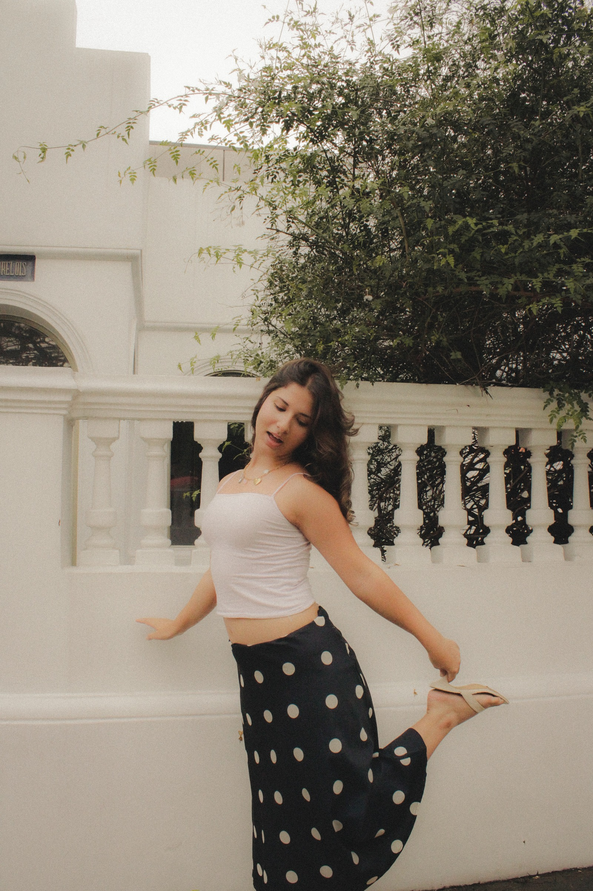
Capturo imágenes profesionales que resaltan la calidad, identidad y valor de cada producto. Ideal para emprendimientos, tiendas en línea, redes sociales y campañas publicitarias.
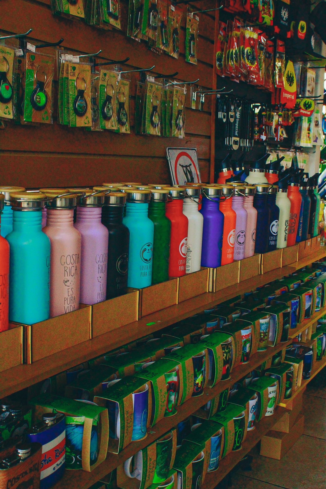
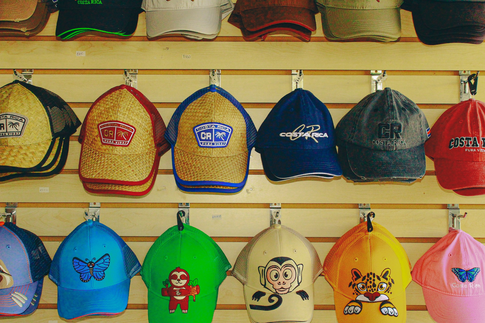
04 / Servicios
Sesiones personales con dirección visual, composición limpia y edición cuidada.
Fotografía para emprendimientos, tiendas en línea, redes sociales y campañas publicitarias.
Registro visual de espacios, celebraciones y momentos con enfoque documental.
05 / Contacto